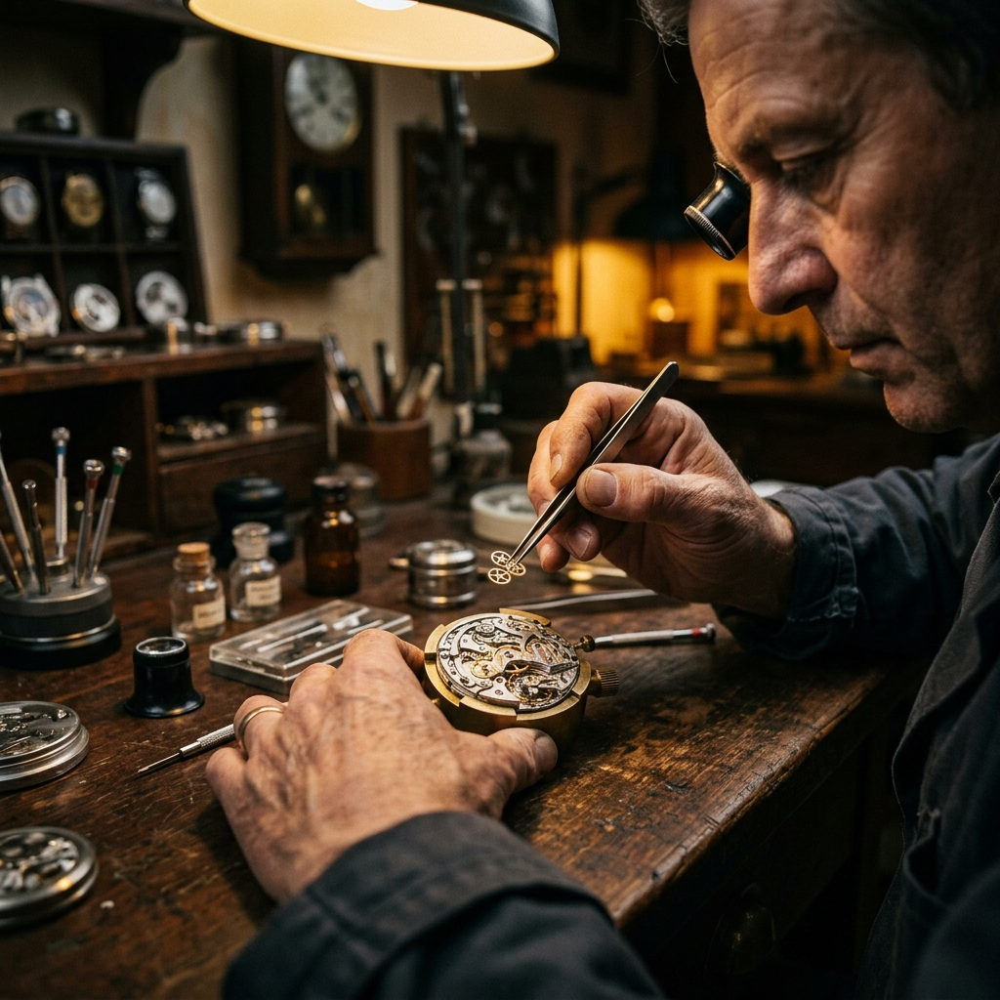

Born in the Jura mountains of Switzerland, ChronoLux has been defining the art of fine watchmaking for over 135 years. Each watch is a chapter in our ongoing story of excellence.

Every movement is regulated to ±2 seconds per day — exceeding COSC chronometer standards.
We use only ethically sourced materials and operate with full transparency across our supply chain.
Carbon-neutral since 2022. Our ateliers run on 100% renewable energy from Swiss hydropower.
Each dial is hand-finished by artisans who spend years mastering their craft before joining our team.
Henri Lux establishes the first ChronoLux atelier in Le Locle, Switzerland, with a team of six craftsmen.
Launch of the CL-1, our first in-house chronograph movement, winning a gold medal at the Geneva Watchmaking Exhibition.
ChronoLux opens its first international boutique in Paris, followed by London and New York within a decade.
Introduction of our skeleton movement collection, revealing the artistry of our movements through open dials.
ChronoLux celebrates 135 years with a limited edition collection of 135 individually numbered pieces.
4th generation of the founding Lux family. Leads global strategy with a deep respect for heritage.
40 years of watchmaking experience. Oversees all movement development and quality assurance.
Former Patek Philippe designer. Brings a fusion of Eastern minimalism and Swiss tradition to each collection.
Discover our full collection and find the watch that tells your story.